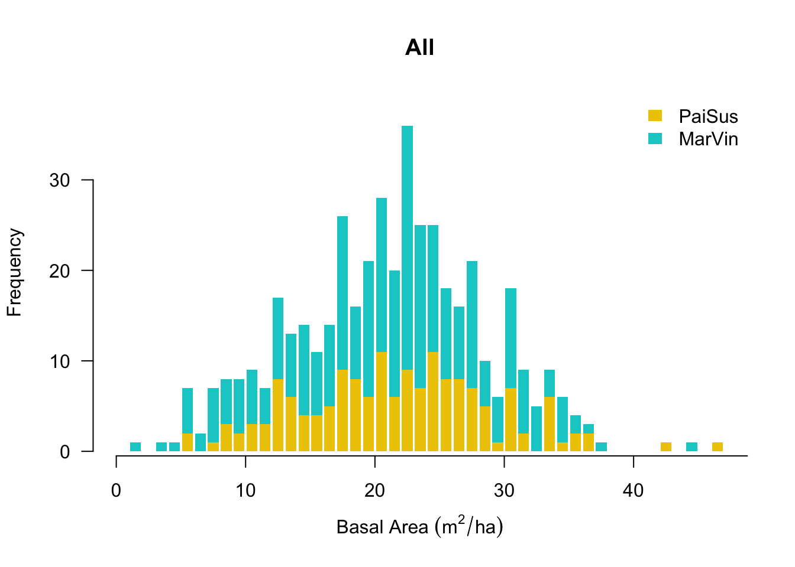
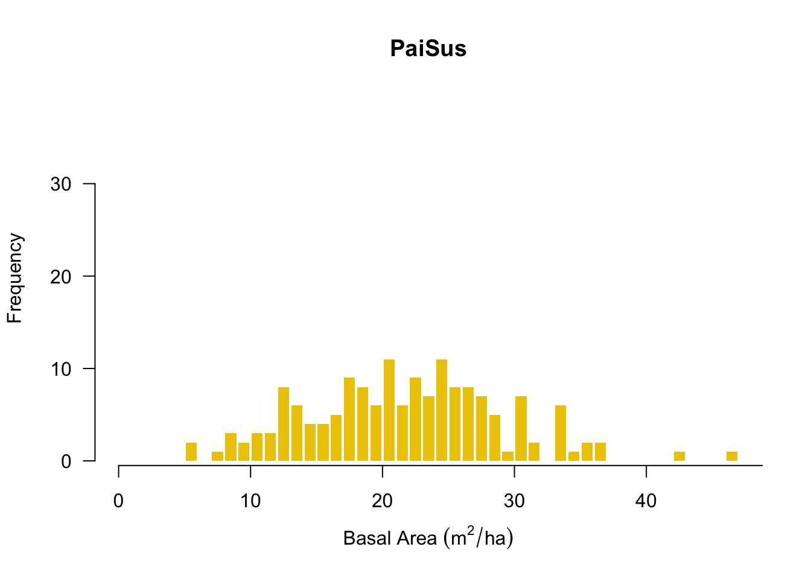
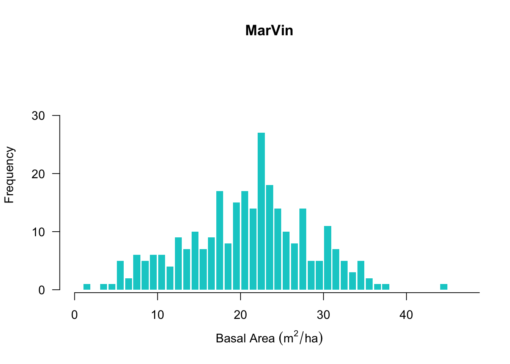
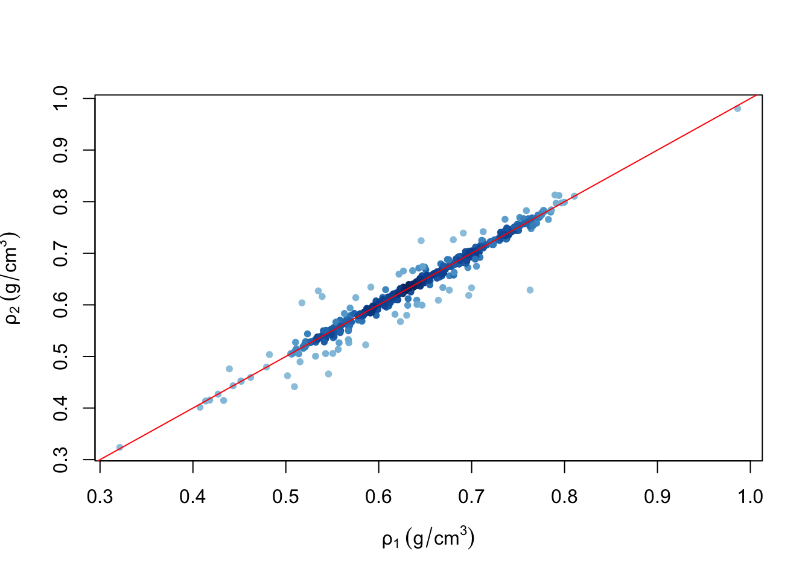
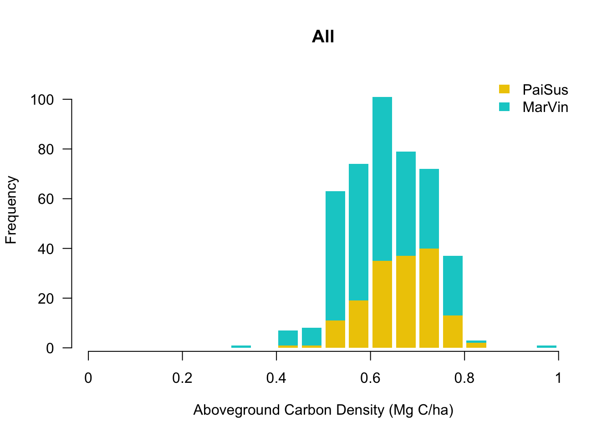
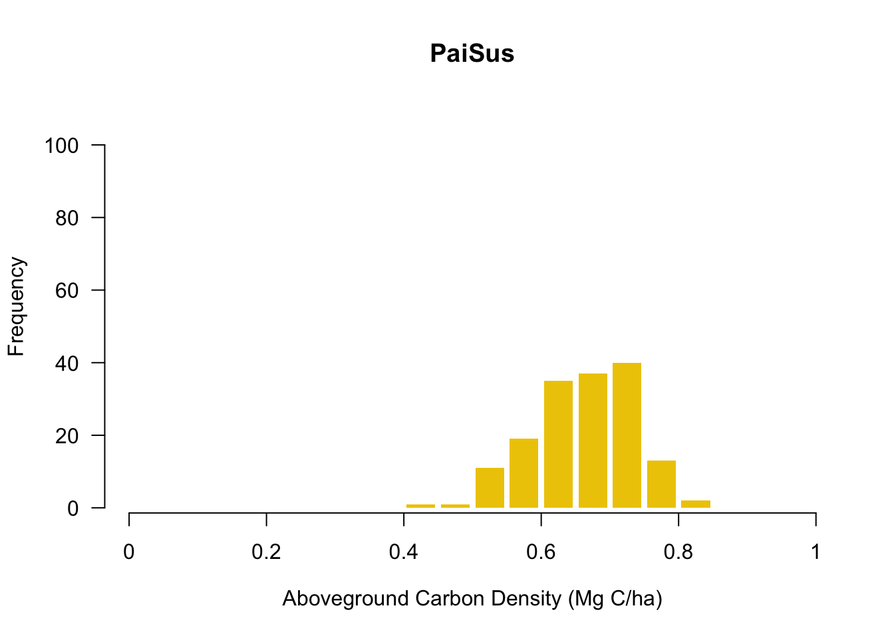
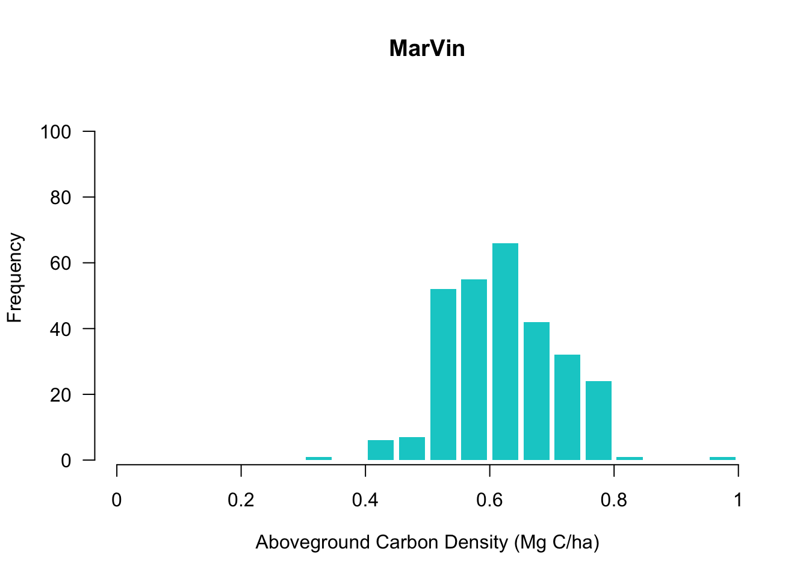

Basal Area (BA) is the area occupied by stems in the plot. Assuming that all trees are circular, basal area for each individual is calculated with the classic formula of diameter-area relation in a circle:
\[ BA_{ind} = \frac{\pi}{4}*DBH^2 \]
Then, the BA of the plot (BAplot) is the aggregation of all individual BA (BAind) divided by the plot area [m2/ha]:
\[ BA_{plot} = \frac{\sum{BA_{ind}}}{area_{plot}}\] Similar to AGB, to adjust the contribution of 10 to 35 cm DBH individuals in proportion of the sub-plot area, an expansion factor was applied to BA.
\[ BA_{plot\space[10,35)} = \beta_{subplot \space [10,35)} * \frac{\sum{BA_{ind\space[10,35)}}}{area_{plot}} \]
\[ \because\space \beta_{subplot \space [10,35)} = \frac{area_{plot}}{area_{subplot \space [10,35)}} \]
\[ BA_{plot\space[10,35)} = \frac{ \sum{BA_{ind\space[10,35)}}} {area_{subplot \space [10,35)}} \]
and, given the contribution of BA from individuals above 35 cm DBH:
\[ BA_{plot\space[35,Inf)} = \frac{\sum{BA_{ind\space[35,Inf)}}}{area_{plot}} \]
total Basal Area for a plot [m2/ha] is:
\[ BA_{plot} = \frac{ \sum{BA_{ind\space[10,35)}}} {area_{subplot \space [10,35)}} + \frac{\sum{BA_{ind\space[35,Inf)}}}{area_{plot}} \]



ρplot is the BA-weighted mean wood density of the plot:
\[ \rho = \frac {\sum {\left(BA_{ind} * WD_{ind} \right) }}{\sum{BA_{ind}}} \]
Again, to account for the adjusted contribution of the 10-35cm DBH sub-plot individuals, I calculated the WD weighted mean separately for the ones with DBH above 35cm (ρ~plot [35,Inf)~) and for 10-35 cm DBH (ρ~subplot [10,35)~). Then I followed two approaches:
\[ \rho_{1} = \frac {\rho_{subplot\space[10,35)} + \rho_{[35,Inf)} }{2} \]
\[ W_{[10,35)} = \beta_{subplot \space [10,35)} * \sum{BA_{ind\space[10,35)}}\] \[ W_{[35,Inf)} = \sum{BA_{ind\space[35,Inf)}}\]
then,
\[ \rho_{2} = \frac {W_{[10,35)} * \rho_{subplot\space [10,35)} + W_{[35,Inf)} * \rho_{[35,Inf)} }{W_{[10,35)} +W_{[35,Inf)}} \]



